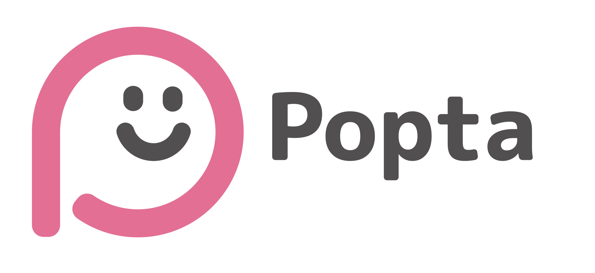
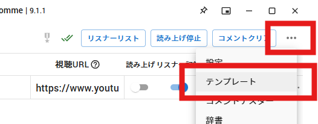
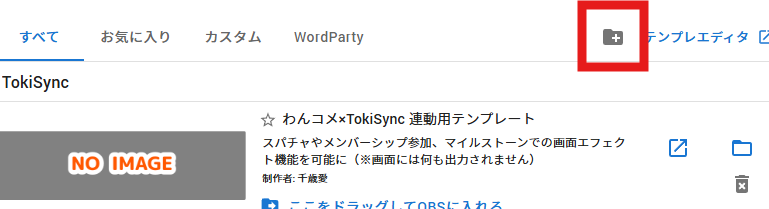

Popta Usage Guide

配信の高評価数・同時接続数・コメント数などを表示するわんコメテンプレートを準備し、OBSで使う見た目を作るためのガイドです。
START HERE
何をしたいですか？
目的に近いところから始められます。
最短セットアップ
- Poptaの設定を開く初回に作成されたわんコメテンプレートを確認します。
- わんコメへ登録するテンプレートのフォルダを開き、わんコメへ追加します。
- Poptaで見た目を作る項目、バッジ全体、ポップアップ全体を編集します。
- CSSをコピーする「生成されたCSS」を開き、コピーします。
- OBSへ貼る対象ブラウザソースの「カスタムCSS」へ貼り付けます。
表示する仕組みと見た目は別です。 わんコメテンプレートが値を取得し、PoptaがOBSへ貼るCSSを作ります。
Poptaの仕組み
わんコメ用テンプレートは、作成したフォルダごとに単体で動作します。別のテンプレートやPoptaのデザインファイルを参照しません。
ファイル名が似ていても役割は異なります。
| 種類 | 役割 |
|---|---|
| わんコメテンプレートのフォルダ | 配信情報を取得・表示する |
デザインフォルダ／ZIP | バッジまたはポップアップのデザインを追加する |
.popta | Pro版で編集内容を保存するプロジェクト |
| 生成されたCSS | OBSブラウザソースのカスタムCSSへ貼る |
表示用テンプレートを準備する
- 画面右上の「設定」を開きます。
- 「わんコメテンプレート」で、初回作成済みのテンプレートを確認します。
- 必要に応じて名前、挨拶判定キーワード、ポップアップ表示時間を編集します。表示時間は秒単位で指定します。
- Poptaの「フォルダを開く」で対象フォルダを確認します。
- わんコメの「…」→「テンプレート」を開き、フォルダに＋の追加ボタンから対象フォルダを指定して登録します。
名前はテンプレートごとに変えてください。 わんコメはtemplate.jsonのnameが同じテンプレートを複数登録できません。
用途別に複数作成できます。それぞれが必要なHTML・JavaScript・CSS・設定を自分のフォルダ内に持ちます。


登録後に設定を更新したとき
名前・挨拶判定キーワード・表示時間を変更したら、わんコメ上の登録を一度削除し、更新したフォルダを登録し直してください。 名前を変更した場合は、変更前の名前の登録を削除します。
Poptaの更新完了メッセージにある「テンプレートのフォルダを開く」から、登録し直す対象を確認できます。
削除するのは、わんコメ上の登録だけです。 フォルダ自体や、Poptaの設定画面にあるテンプレートは削除しないでください。
色や文字サイズなど、見た目だけを変えた場合は再登録ではなく、OBSのカスタムCSSを貼り直します。
デザインを編集する
項目ごとの設定
高評価、同時接続数、視聴回数、初コメント、挨拶から項目を選び、表示のON/OFF、ラベル、アクセントカラー、ポップアップ文言を設定します。アクセントカラーは同じ項目のバッジとポップアップで共有されます。
バッジ全体
常に表示する数値のデザイン、位置、フォント、配色、項目間隔や並びを設定します。
ポップアップ全体
値が変化したときの表示デザイン、位置、配色、装飾、登場・退場アニメーションを設定します。「テスト表示」で実際の動きを確認できます。
デザインによって表示される設定項目は異なります。横型・縦型キャンバス、中心ガイド、背景色を切り替えながら確認してください。
生成したCSSをOBSへ設定する
- Popta下部の「生成されたCSS」を開きます。
- 「コピー」を押します。
- OBSで、わんコメから追加した対象ブラウザソースのプロパティを開きます。
- 「カスタムCSS」へ貼り付け、決定します。
- 値の更新とポップアップを配信前にテストします。
見た目を変更した後はCSSを再度コピーし、OBS側へ貼り直します。custom_css.cssのような追加ファイルは不要です。
用途別にテンプレートを増やす
設定画面から、用途ごとに独立したわんコメテンプレートを作れます。配信枠やチャンネルごとに、名前・挨拶キーワード・ポップアップ表示時間を分けられます。
わんコメテンプレートと、Poptaのデザインフォルダ／ZIP／.poptaには参照関係がありません。OBSへどのCSSを貼るかによって組み合わせます。
ZIP・フォルダの取り込み
右上の「読み込み」でZIPまたはdesign.jsonを選択します。設定画面の「フォルダから追加」も使えます。複数ZIPとセットZIPに対応し、Pro版で.poptaと同時選択した場合はデザインを先に処理します。
外部ファイルはAppDataへコピーし、ZIPは編集可能なフォルダへ展開します。取り込み後の修正はAppData側で行います。管理済みフォルダはコピーせず再読み込みします。
登録済みIDは上書きしません。同時選択内の重複IDは該当分をすべて除外します。識別可能な設定エラーは保存して使用不可として表示し、識別できないファイルは問題一覧へ表示します。
「デザインをリセット」はファイルを再読み込みして初期値へ戻します。横の「⋮」から再読み込み・デフォルトセットの不足ファイル復元を選べます。
保存と読み込み
| 機能 | Standard | Pro |
|---|---|---|
デザインフォルダ／ZIPの読み込み・管理 | 利用可能 | 利用可能 |
.poptaプロジェクトの保存・読み込み | — | 利用可能 |
画面右上の「読み込み」は両版にあります。Standard版ではデザインテンプレートを、Pro版ではデザインテンプレートとプロジェクトを選択できます。複数ファイルを選んだ場合はデザインフォルダ／ZIPを先に処理します。
デザインフォルダ／ZIPを追加・復旧する
デザインフォルダ／ZIPを読み込むと、バッジまたはポップアップのギャラリーへデザインが追加されます。設定画面から追加・削除・保存フォルダの表示もできます。
設定エラーがある場合
ファイルを識別できる場合は「設定エラー」のカードとして一覧へ残ります。不正なデザインの設定フォーム、プレビュー、CSSコピーは停止します。
- カードを右クリックし「エクスプローラーで表示」を選びます。
- 制作者がファイルを修正します。
- 同じカードを選び「デザインをリセット」を押します。
デフォルトデザインを消した場合
「デフォルトセットを復元」を押すと、不足ファイルだけを補充します。編集済み・破損中を含む既存ファイルは上書きしません。
困ったとき
CSSをコピーできない
バッジまたはポップアップのデザインを正常に読み込めていません。問題一覧を確認し、再読み込み・修正・復元を行ってください。
わんコメに登録できない
登録済みテンプレートと同じ名前になっていないか確認してください。
設定変更が反映されない
わんコメ側の設定を変えた場合はテンプレートを再読み込みします。見た目を変えた場合は、OBSのカスタムCSSを貼り直します。
デザインを全部消した
デザインフォームまたは設定画面の「デフォルトセットを復元」を実行してください。
デザインテンプレートを作る
デザインフォルダ／ZIPは、design.json、CSS、任意の画像素材を含む自己完結フォルダです。バッジとポップアップは別フォルダとして作ります。
JavaScript、任意HTML、任意の外部URLは利用できません。WebフォントはGoogle Fonts・Bunny Fontsの専用設定のみ対応しています。
Webフォントを使うデザインは、PoptaとOBSから配信サービスへ通信します。ネット接続が必要で、読み込めない場合は代替フォントになります。PC内のフォントを使うデザインは、利用者のPCにも同じフォントが必要です。フォントファイルの同梱には対応していません。